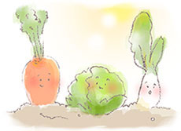

契約農家から直接仕入れた新鮮な素材だけを使い、1つ1つ丁寧に手作りしています。
無農薬！おいしい有機野菜だけを使用しています

すべて無農薬！
自然のまま育てられた新鮮な野菜・果物だけを仕入れています。
もちろん安心の国内産。
日本各地から様々な食材を取り寄せています。
例えばキャベツは福岡県、トマトは熊本県、チーズや玉ねぎは北海道、レタスは長野県。
だから安心・安全でおいしい料理をご提供することができます。
オーダーを受けてから、手作りしています

一番おいしい状態で召し上がっていただけるように、作り置きではなく、すべてオーダーをうけてからお作りしています。
だからいつも出来立て新線！
ピザはアツアツとろ～り。ジュースは搾りたて！
素材の良さを生かし、一番の食べごろでお出しします。
契約農家さんから直接お店へ

使用する野菜や果物は、契約農家さんから直接当店へ運ばれてきます。
その日の朝に収穫した、新鮮な野菜や果物ばかりです。
これをすぐに専用の冷蔵庫に入れ保存します。
その後、オーダーを受けてから取り出し調理します。
だからいつも新鮮フレッシュ！取れたて無農薬のおいしさを味わってください。
ご案内


ご予約やお持ち帰りもOK！
できたてホカホカ！お電話でのご注文も承っています。ご予約やテイクアウトにどうぞ！詳しくは各店舗までお電話ください。